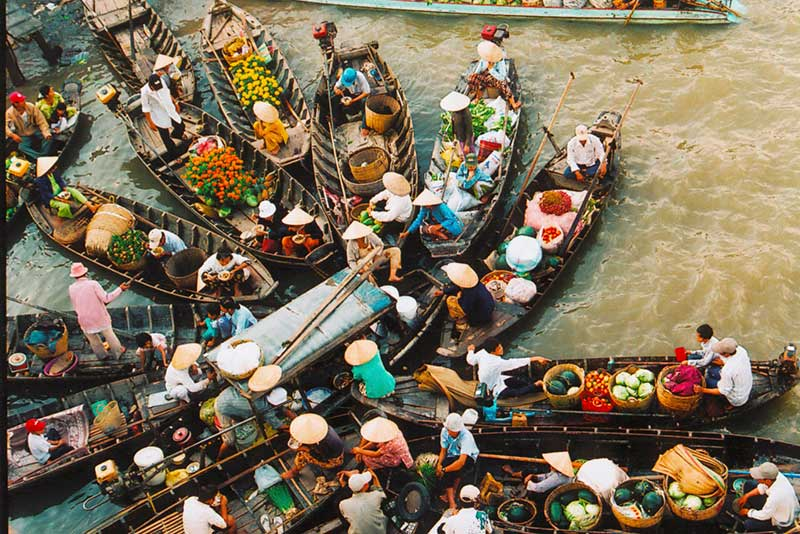

Phát triển và bảo tồn những giá trị văn hóa truyền thống đặc trưng là một trong những giải pháp quan trọng trong việc góp phần thực hiện có hiệu quả cho việc “Xây dựng và phát triển Cần Thơ thành thành phố trung tâm vùng, sinh thái, văn minh, hiện đại, mang đậm bản sắc sông nước vùng Đồng bằng sông Cửu Long” theo tinh thần Nghị quyết số 59-NQ/TW của Bộ Chính trị “Về xây dựng và phát triển thành phố Cần Thơ đến năm 2030, tầm nhìn đến năm 2045”.
Hiện nay, dân số trên địa bàn thành phố Cần Thơ có trên 1,3 triệu người, trong đó, người Kinh chiếm trên 97%; người Khmer chiếm khoảng 1,6%; người Hoa chiếm khoảng 0,9%; ngoài ra còn một tỷ lệ rất nhỏ các dân tộc khác như Chăm, Tày, Nùng, Thái, Ê Đê,... Nhìn chung, các dân tộc Kinh, Khmer, Hoa... sinh sống đoàn kết, cùng chung tay xây dựng Cần Thơ giàu đẹp. Trong quá trình hình thành và phát triển, thành phố Cần Thơ luôn có sự hòa quyện giữa văn hóa, văn minh đô thị với văn hóa, văn minh sông nước - miệt vườn, tạo nên một tổng thể văn hóa của đất và người Cần Thơ. Văn hóa của người Kinh có sự giao lưu, tiếp xúc với văn hóa người Khmer, Hoa, Chăm tạo nên sự hòa hợp văn hóa của cộng đồng các dân tộc trên địa bàn. Hình thành nên nét văn hóa chung của thành phố Cần Thơ phong phú, đa dạng, giàu bản sắc, nhưng vẫn giữ được những đặc trưng văn hóa của riêng mỗi dân tộc.
Đến nay, thành phố Cần Thơ có 38 di tích lịch sử văn hóa được xếp hạng, trong đó có 14 di tích cấp quốc gia và 24 di tích cấp thành phố; hoạt động kiểm kê di sản văn hóa phi vật thể trên địa bàn ghi nhận 112 loại hình.
Văn hóa Chợ nổi Cái Răng (2016) |
Lễ hội Kỳ yên đình Bình Thủy (2018) |
Hò Cần Thơ (2019) |
Hát ru của người Việt ở Cần Thơ (2020) |
Nghề thủ công truyền thống Nghề làm bánh tráng ở Thuận Hưng (2023) |
|

|
|
|
|
|